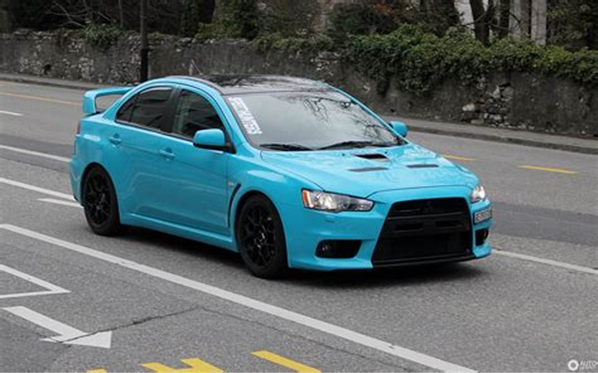
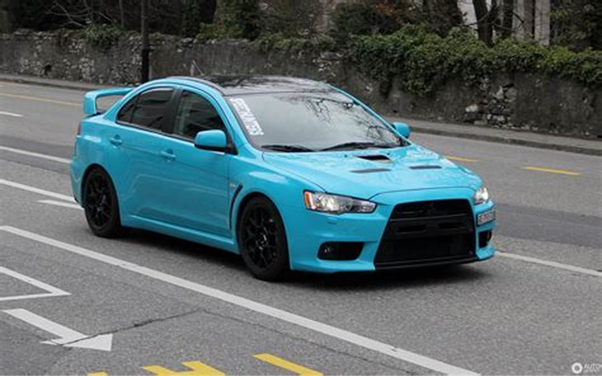
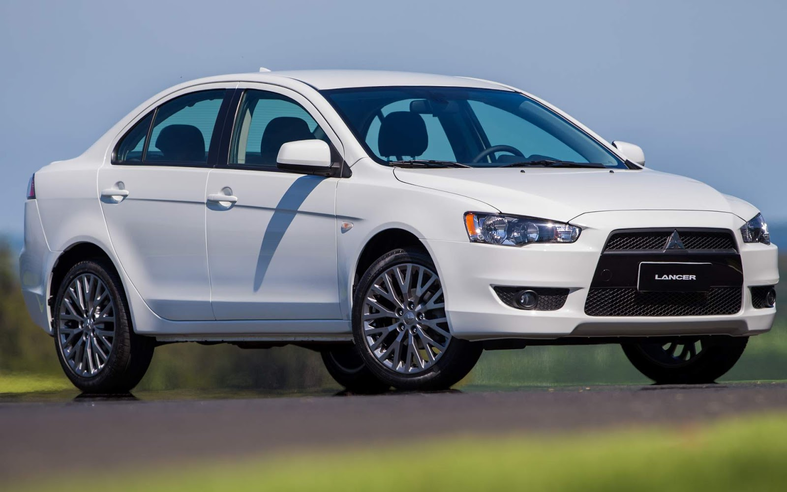

Mitsubishi Lancer Evo
 

O Lancer Evolution, carinhosamente apelidado de Lancer Evo, é um sedan de alto desempenho que foi produzido pela renomada fabricante de automóveis, Mitsubishi Motors, de 1992 a 2015. Este veículo icônico é baseado no Mitsubishi Lancer, um modelo compacto que ganhou notoriedade mundial.
Ao longo de sua produção, o Lancer Evo foi lançado em dez versões distintas. Cada uma dessas versões era equipada com um motor turbo de 2 litros e tração nas quatro rodas, uma combinação que proporcionava um desempenho excepcional. As versões eram identificadas por números romanos, uma característica única que, no entanto, não indicava necessariamente uma nova geração.
Os modelos vendidos no Japão tinham a potência limitada para cumprir as leis locais de segurança e eficiência energética. No entanto, a Mitsubishi Motors não impôs essa restrição em todos os mercados. Em alguns mercados internacionais, como o Reino Unido, o Lancer Evo mantinha sua potência original, chegando a impressionantes 450 cavalos de potência.
Além de seu desempenho nas ruas, o Lancer Evo também fez história no automobilismo. Ele foi campeão do Campeonato Mundial de Rally (WRC) quatro vezes consecutivas, de 1996 a 1999. Além disso, o Lancer Evo dominou o Campeonato Mundial de Carros de Produção (P-WRC) dez vezes, nos anos de 1995 a 2001 e de 2008 a 2010. Essas conquistas atestam a qualidade e o desempenho superior do Lancer Evo, tanto nas ruas quanto nas pistas de corrida.
Em resumo, o Lancer Evolution é mais do que apenas um carro - é um ícone do automobilismo, um testemunho do compromisso da Mitsubishi Motors com a inovação, a performance e a excelência em engenharia. Embora sua produção tenha terminado em 2015, o Lancer Evo continua a ser um dos sedans de alto desempenho mais respeitados e admirados do mundo.
O Lancer Evolution foi originalmente destinado apenas para o mercado japonês, mas com a demanda do mercado cinza, começou a ser vendido no Reino Unido e em vários mercados europeus a partir de 1998. A Mitsubishi decidiu exportar a 8ª versão do Lancer Evolution para os Estados Unidos em 2003, depois de notar que o Subaru Impreza WRX STI, seu rival, teve sucesso nesse mercado. Saiba mais clicando AQUI!
Diferença do Mitsubishi Lancer para o Mitsubishi Lancer Evolution
Mitsubishi Lancer
Mitsubishi Lancer Evolution
O Mitsubishi Lancer Evolution, uma versão de alto desempenho do Mitsubishi Lancer, é um veículo que combina potência, estilo e tecnologia avançada. Este modelo é equipado com um motor turboalimentado de quatro cilindros em linha, que gera uma quantidade significativamente maior de potência do que o motor padrão do Lancer. Este motor turboalimentado permite ao Lancer Evolution acelerar rapidamente e manter velocidades altas com facilidade, tornando-o um carro ideal para quem procura emoção ao dirigir.
Além do motor potente, o Lancer Evolution também possui uma suspensão mais rígida. Esta suspensão robusta permite ao veículo manter a estabilidade mesmo em altas velocidades e em curvas apertadas. Isso, combinado com um sistema de tração nas quatro rodas mais avançado, proporciona ao Lancer Evolution uma aderência excepcional ao solo, seja em condições de baixa aderência, como em estradas molhadas ou cobertas de neve, ou em curvas fechadas em alta velocidade.
O Lancer Evolution também se destaca por seu sistema de freios mais potente. Este sistema de freios permite ao veículo parar rapidamente e com segurança, mesmo quando está em altas velocidades. Isso aumenta a segurança do veículo, permitindo ao motorista manter o controle mesmo em situações de emergência.
No que diz respeito ao design, o Lancer Evolution tem um visual mais agressivo do que o Lancer comum. Ele possui um grande aerofólio traseiro, que não só adiciona um toque de estilo ao veículo, mas também melhora a aerodinâmica do carro. As entradas de ar maiores na frente não só dão ao veículo um visual mais esportivo, mas também permitem um maior fluxo de ar para o motor, ajudando a mantê-lo resfriado mesmo durante a condução em altas velocidades.
Em resumo, o Mitsubishi Lancer Evolution é um veículo que combina potência, desempenho e estilo de uma maneira única. Ele oferece uma experiência de condução emocionante, sem comprometer a segurança ou o conforto. Embora seja baseado no Mitsubishi Lancer, o Lancer Evolution é, sem dúvida, um veículo que se destaca por si só.
|
Distanciamento entre-eixos: 2.635 mm; Comprimento: 4.570 mm; Largura: 1.765 mm; Altura: 1.505 mm; Peso: 1.310 kg; Porta malas com capacidade de 413 litros Altura mínima do solo: 170 mm; Freios ABS de disco ventilado ou disco sólido. |
Distanciamento entre-eixos: 2.650 mm; Comprimento: 4.505 mm; Largura: 1.810 mm; Altura: 1.480 mm; Peso: 1.590 kg; Porta malas com capacidade de 323 litros Altura mínima do solo: 135 mm; Quatro freios à disco com quatro discos ventilados. |